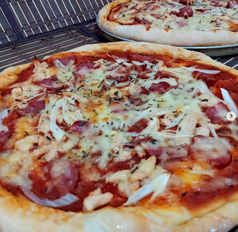
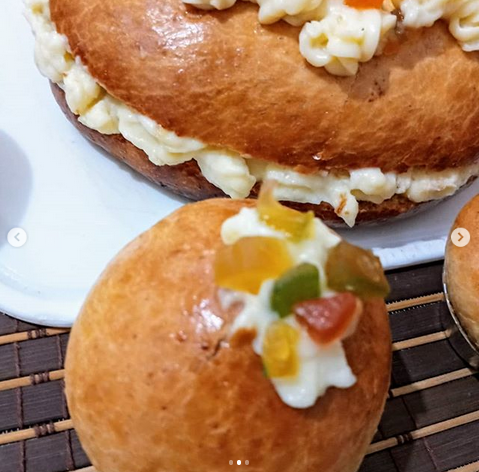
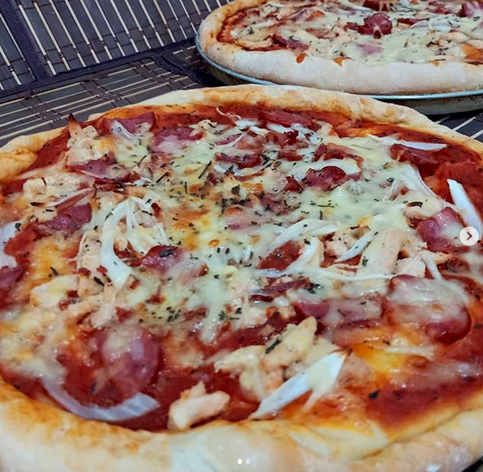
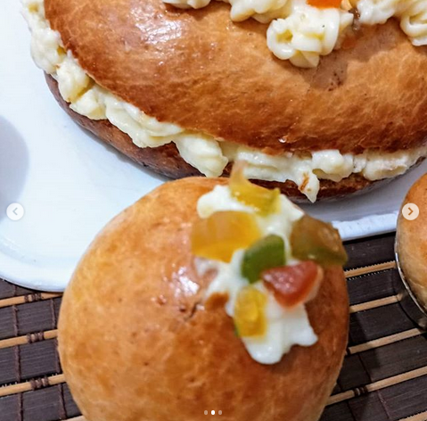

PÃES ARTESANAIS CARLOS
O PÃO DE TUDOS OS DIAS
É uma marca de produtos 100% naturais de fermentação biológica e natural. Nossos produtos são preparados com ingredientes de grande qualidad.
A fermentação natural é feita com massa mãe o que fez que nossos pães sejan realmente artesanais, e se adaptão a clientes exigentes que querem um pão feito no momento, fresco, com variedade.
 


